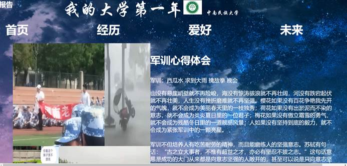
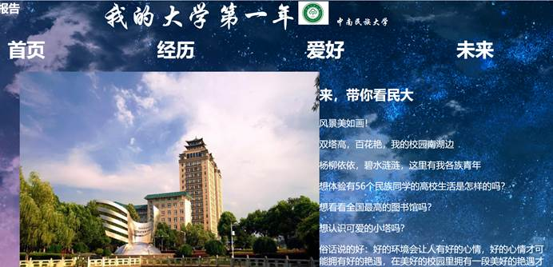
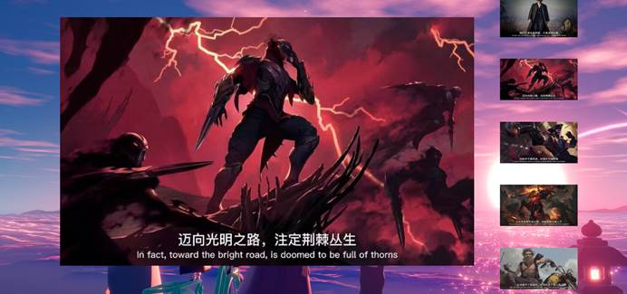
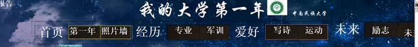
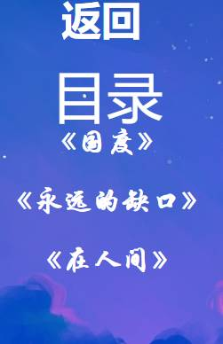
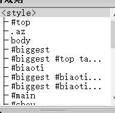
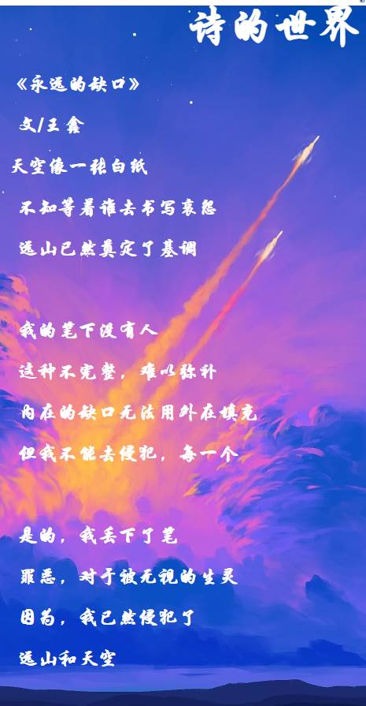

一：网站主题及需求描述：
网站主题为——我的大学第一年，一共有五个大部分，分别是首页，经历，爱好，未来和实验报告。内容页大多图文并茂。其中首页的第一页介绍我的大学——中南民族大学，第二页为照片墙同样为介绍民大的；第二部分分为专业和军训，分别介绍我的专业和在军训经历的趣事和心得。第三部分为我的爱好，分别是写诗和运动两个部分，写诗中跳转到一个诗的展示页，展示了三首自己写的诗，运动其实就是一个错位的照片墙；第四部分为未来，内容为自己感觉很励志的五张图片和一个对未来的期待的页面，第五部分为本次的实验报告。如图：   
二：网站页面结构规划与设计、网站文件夹目录规划、网页布局规划与设计等：
结构规划与设计：本网站在内容上采用总分分结构，循序渐进解释自己的大学生活。在页面的规划上采用了一个导航栏进行指引式浏览，有的内容可能会指向另一个不同框架的页面，通过点击返回按钮返回主页面。
文件夹目录规划：网站的文件夹有images的图片文件夹个一个模板文件夹。模板存在一个文件夹，行为代码一个文件夹。
布局规划和设计：先使用div＋css布局和div的行为制作一个大的模板，模板中包括一个大标题和一个目录栏，目录栏通过行为做出来一个展开式菜单。  
三：网站的实现（主要的步骤及实现的技术等）：
本网站布局均使用div＋css实现，外加行为改变实现弹出菜单的效果。
其次重要的就是素材的积累：
四：总结：
在网站的制作过程中，有对于素材的空虚，也有对技术效果展示的不满，浑浑噩噩做了十几页后去看同学做的，果然，没有对比就没有伤害。他们做的东西跟我的简直是天壤之别，我突然感觉自己不配说自己天天在听课。课堂上学的东西都是基础的，更多的学习需要在课外自学，这次之后真正清楚地认识到了与别人在自制力上的差距，自己懒惰终究是没有好结果。但是，自己的作业虽然没有炫酷的特效，但还是有那么一点网站的味道。网站实现的过程也是自己一步一步完成的，虽然简陋，但至少课堂上教到的东西已经能够运用自如了，而且亲生的孩子虽然丑，但还是很有成就感。知耻而后勇，知不足而后改进。
指导教师批阅：
- 实验态度：不认真（ ），较认真（ ），认真（ ）
- 实验目的：不明确（ ），较明确（ ），明确（ ）
- 实验内容：不完整（ ），较完整（ ），完整（ ）
- 实验步骤：混乱（ ），较清晰（ ），清晰（ ）
- 实验结果：错误（ ），基本正确（ ），正确（ ）
- 实验结果分析：无（ ），不充分（ ），较充分（ ），充分（ ）
- 其它补充：
总评成绩：
评阅教师（签字）：
评阅时间： |
.png)
 中南民族大学
中南民族大学